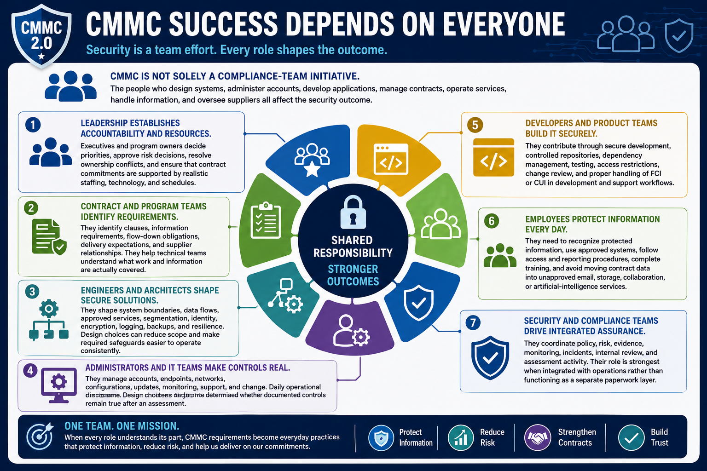

What Is CMMC 2.0?
Engineering and Operational Responsibilities
Connecting to LMS... Progress: in progress
Version 1.0 | Date: 2026-06-16 | Educational overview of CMMC 2.0 concepts.

Narration
CMMC is not solely a compliance-team initiative. The people who design systems, administer accounts, develop applications, manage contracts, operate services, handle information, and oversee suppliers all affect the security outcome.
Leadership establishes accountability and resources. Executives and program owners decide priorities, approve risk decisions, resolve ownership conflicts, and ensure that contract commitments are supported by realistic staffing, technology, and schedules.
Contract and program teams identify clauses, information requirements, flow-down obligations, delivery expectations, and supplier relationships. They help technical teams understand what work and information are actually covered.
Engineers and architects shape system boundaries, data flows, approved services, segmentation, identity, encryption, logging, backups, and resilience. Design choices can reduce scope and make required safeguards easier to operate consistently.
Administrators and IT teams manage accounts, endpoints, networks, configurations, updates, monitoring, support, and change. Daily operational discipline determines whether documented controls remain true after an assessment.
Developers and product teams contribute through secure development, controlled repositories, dependency management, testing, access restrictions, change review, and proper handling of FCI or CUI in development and support workflows.
Employees need to recognize protected information, use approved systems, follow access and reporting procedures, complete training, and avoid moving contract data into unapproved email, storage, collaboration, or artificial-intelligence services.
Security and compliance teams coordinate policy, risk, evidence, monitoring, incidents, internal review, and assessment activity. Their role is strongest when integrated with operations rather than functioning as a separate paperwork layer.